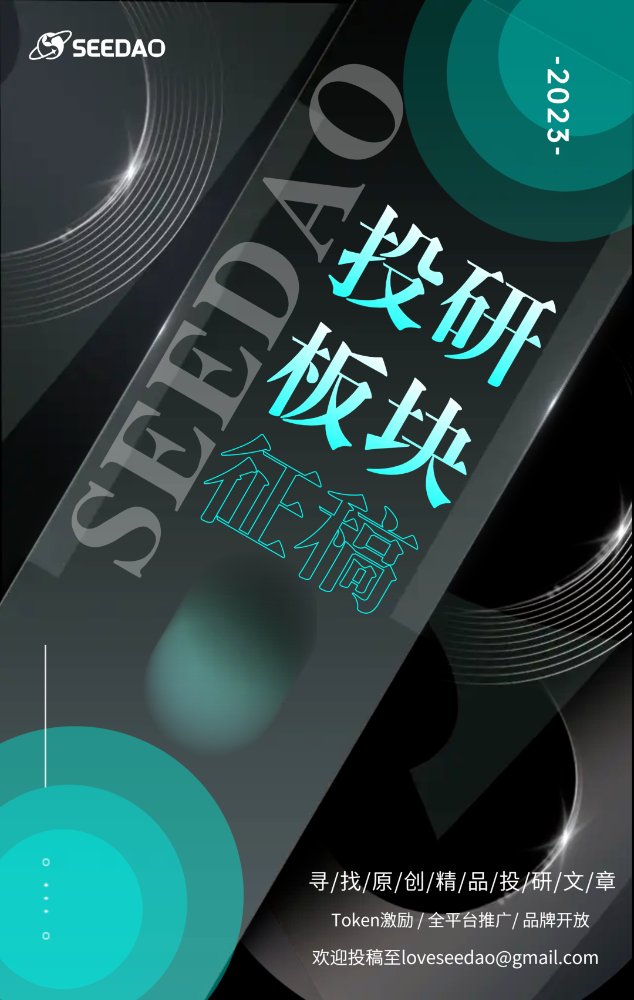

L2 项目再次成为万众焦点。
作为 L2 中 Rollup 扩容路线的代表，前脚 Arbitrum 空投完，后脚 zkSync Era 就上线了。层出不穷的新设计、路线图背后，Rollup 到底有一条什么主线，演进的思路是怎样的，今天就来理一理。
本文要点：
写给三年级看的 L1 的扩容思路
从零设计一个 Rollup 方案
如何用零知识证明让 Rollup 再进化
从一个类比说起
对比特币、以太坊而言，自诞生起，来自普通用户的最大诟病有二：
慢：本来就车道窄，车稍微一多就堵得水泄不通。
贵：平峰过路费就不便宜，要遇到高峰期想快点过，更是要使用“钞能力”，加钱让矿工开直升机来捞你。
这俩诟病之处，分别源于区块链设计上的 2 个因素：
区块容量：类比车道，区块容量越大，能容纳的车就越多，就越不容易堵。
激励机制：再大的车道，都有堵的可能，这种时候让谁先过呢，看谁有急事，但不能光听人嘴上说，得看掏钱意愿，比如叫救护车一趟就要好几百。
要是区块链真可以类似车道，那么治本之策自然是奔着拓宽车道去，同时配合价格手段来在出门时间上进行疏导，不急的就先别出门了。
然而，拓宽车道，提升区块容量，虽然是个诱人的通行效率解决方案，但在区块链设计上，却是舍本逐末了。因为区块容量越大，对矿工的硬件要求就越高，能达到要求的矿工就越少；按这种思路，要想做到像 Visa 那样每秒处理成千上万条交易，最终只会做出另一个中心化的 Visa，与区块链去信任的核心目的南辕北辙。
那还有其他解法吗？有的，除了在时间上疏导，我们在空间上也可以优化，包括但不限于：
开辟不同车道，大货车走一条，小轿车走一条，公交车走一条，互不干扰 — — 基于这个思路，我们可以来些各有所长的主链、侧链或 Plasma。
优化路线设计，适当分流，别进城干点啥都要走这条主干道，都要过这里的检查站了 — — 基于这个思路，我们可以分片（Sharding）。
干嘛一定要出门呢？远程开会，达成一致了，线下签协议再出门也不迟 — — 基于这个思路，我们可以有状态通道（State Channel）。
大家出门不一定都得自己开车，也可以拼车，或乘坐公共交通工具 — — 基于这个思路，我们就有了本文的主角，Rollup。
作为区块链上的公交车，Rollup 的关键其实就是省空间和省汽油（Gas，pun intended）：
省空间，从而不容易堵，而且每人分摊的过路费相比自己开车，也要少很多；
省汽油，从而票价亲民，大家都坐得起。
这样一来，“慢”和“贵”这两个槽点就被 Rollup 解决了。
下面我们回到区块链上，看看 Rollup 的具体方案。
从零设计一个 Rollup 方案
与其偷看看标准答案（何况没有），不如来点悬念，想象自己接到为以太坊设计 Rollup 的任务，会怎么做。
我们不妨从减少计算成本（省汽油）和减少存储成本（省空间）2 个角度出发，先提一个比较激进的方案，叫 Rollup 1.0。
Rollup 1.0
Rollup 1.0 包含 3 个要点：
有一个服务商（Operator），专门收集大家的“拼车”交易（Transaction），拼满了，或者没满但约定时间到了就“派单”，兼顾价格和时效；
大家提交的交易中涉及的所有计算都由这个服务商在链下进行，因为链下计算比链上快，而且计算往往是链上成本中的大头，这样可以省不少钱；
计算完后，得到更新后的状态（比如大家账户里的最新余额），上链存储，这样一来存储成本低了很多。
简单来说，就是定时定量收集大家的交易请求，链下计算后，只把计算结果固化到链上。
这个方案完美地解决了“慢”和“贵”这 2 大痛点，但又似乎衍生了新的问题：
动机问题（Incentive）：谁来提供“拼车”服务，有什么好处。
审查问题（Censorship）：服务商故意不处理我的单（或者挂了、不干了），我该怎么办；
欺诈问题（Fraud）：如果服务商使诈，篡改计算结果，导致我给别人转账，钱被他私吞了该怎么办。
针对这 3 个新问题，我们可以迭代一版方案。
Rollup 2.0
动机问题最好解决，能用钱解决的问题都不是问题。服务商可以平摊“拼车”成本，再额外收一点“小费”，即便如此和“拼车”人之间仍然是双赢。
审查问题稍微麻烦点，但解法在区块链领域很常见，那就是去中心化。一群人都是服务商，比只有一个服务商好；任何人都能当服务商，又比固定一群人当服务商好。在后面这种玩法下，如果所有服务商都不乖，你也能自己当服务商，或者直接去 L1 发起仲裁。
欺诈问题就有点难度了。它可以拆分成两个问题 — — 一个是如何识别欺诈，另一个是如何防范欺诈。
首先，要识别欺诈，我们需要知道大家的交易（Transaction）数据，交易前的状态（State），从而计算交易后的新状态（State’），拿来和服务商链上存储的新状态对比，如果一样说明服务商诚实，否则说明他撒了谎。然而，我们并不知道交易数据，因为它们没有上链。这就导致我们只能将信将疑，无法判断服务商是否诚实。
接着，防范欺诈，最好的方式就是让欺诈不可能出现，这个比较难，除非链上每次都检查一遍服务商的计算对不对，但这样一来就没有“拼车”的优势了。所以我们只能退一步，让欺诈的成本很高，让服务商有所顾忌（have skin in the game），比如交个押金（Stake），如果发现欺诈就将其没收。（这种方式叫社会共识，属于基于博弈的安全性，在《周报 #3》中亦有提及。）
Rollup 3.0
Rollup 2.0 还不错，但识别欺诈的问题没解决。
根据之前的推论，要识别欺诈，我们必须要知道交易数据，所以这部分数据，必须和状态数据一样上链。
那由谁来发现他们欺诈呢？很显然，这个不大能是普通用户，因为大家不可能 7x24 小时监督服务商的一举一动，所以只能是专业的“赏金猎人”（Validator）。如果服务商“派单”后的 7 天内，有“赏金猎人”举报欺诈，并且验证属实，那么交易就会回滚，服务商就会受到惩罚。当然，如出一辙，“赏金猎人”也需要有激励，比如发现欺诈后，服务商的押金将分一部分给“赏金猎人”（只会是一部分，避免服务商和赏金猎人共谋）。
Rollup 4.0
到 Rollup 3.0 阶段，整个方案已经能够跑通了，但又引入了新的成本。到目前为止，成本包括：
给服务商的费用（包含成本和“小费”）；
交易、状态数据的链上存储成本；
“赏金猎人”认为服务商欺诈时，链上验证其所言非虚的计算成本。
下面我们来看看，有哪些成本是可以优化的。
交易数据
通过特定的方式，多条交易聚合在一起，所占的空间是可以比每条交易所占空间的总和要小的。
以最简单的 ETH 转账交易为例，我们拆解下每条交易的内容构成，可以看到，签名的空间占比最大。我们可以将所有交易的签名，合成一个（Key Aggregation)，这样就省了很大一笔存储的开销（类比比特币中的 Schnorr）。此外其他部分我们也可以优化，比如把 Nonce 甩掉，以及“拼车”的时候尽可能选择“肥瘦相间”、严丝合缝的“拼车人”，最大限度地利用“车内”空间。
来源：https://vitalik.ca/general/2021/01/05/rollup.html
就这么三两下，每条 ETH 转账交易的大小就由 112 字节，缩减为 12 字节，接近以前的十分之一；当然，还有其他手段，可以进一步压缩交易数据。
在实际操作中，我们可以在链上部署的合约里，安插这么一个方法：
function storeTxData(bytes calldata data) external { // 啥事儿不干}
然后每次“拼车”成功后，把合并压缩后的交易数据，作为 calldata 传入这个方法。calldata 不需要永久保存，社会共识的公示挑战期（Challenge Period）过后，被剪枝（Prune）也不会有所谓；本身价格很低，而且之后随着 Danksharding、Data Blob 等 EIP 落地，会更便宜，这种将 L1 应用于数据存储分发（Data Availability）的形式也会更正式。
状态数据
既然交易数据已经上链，那任何人都可以通过交易数据来计算更新后的状态了，状态数据就没那么大必要了。我们可以只保留状态数据的 Merkel Root，用于在服务商不配合时，让普通用户（“拼车人”）可以直接向 L1 申请提款，靠 Merkel Proof 证明自己账上有钱。
欺诈仲裁成本
当“赏金猎人”举报服务商说有欺诈时，链上合约计算（Replay）一次，对比状态结果，这理论上固然可行。但是，这样做一是成本不低（虽然已经不错了），二是 Rollup “拼车单”包含的交易的 Gas 总和可能超过了以太坊的 Gas 上限，致使无法验证。
所以仲裁需要减负，减负的方式自然也是把不必要的计算操作放到链下进行。其中一种解法叫交互式证明（Interactive Proving），大致过程如下：
“赏金猎人”交押金，然后举报，并将整个计算过程按顺序拆分成 n 段，指出服务商在第 k 段（1≤k≤n）有欺诈；
服务商将第 k 段再下钻、拆解为 k 段，并指出“赏金猎人”在哪一段算得不对；
如此往复，知道计算操作再也不可下钻、拆解，比如拆到“赏金猎人”认为 1+1=2，服务商认为 1+1=3；
这时，链上合约介入，计算 1+1，得出 2，从而判定服务商欺诈，没收其押金，并将一部分奖励给“赏金猎人”。
（整个过程中，若某一方超时未回复，则这一方失败。）
这样一来，整个链上仲裁成本就非常非常低了。
说到这里，我们便完整地构建了一个 Rollup 方案。因为这种方案默认假定服务商是诚实的，除非有“赏金猎人”举报，所以这一派别叫做乐观主义者的 Rollup，所谓 Optimistic Rollup。
那么，我们的 Rollup 4.0，就是最优的方案了吗？
Rollup 再进化
经过我们的多轮迭代，Rollup 4.0 依然有些不完美的地方：
欺诈需要有“赏金猎人”来发现，但如果长时间没有欺诈，“赏金猎人”可能因为无利可图就都歇业了，于是缺口就有了（尽管不大可能，因为 Rollup 链的应用商等相关利益方大概率会作为“赏金猎人”）；
要确信没有欺诈，基于社会共识，需要等待好几天，影响提款等操作；
上链的数据挺多的，成本还是有；
目前靠一层 Rollup 扩容，吞吐量可能也就提升 10 倍，有没有可能更高些呢？
有没有一种方案，能让欺诈根本无从实施，让最终性（Finality）更快，让需要上链的数据更少，让扩容更上一个量级呢？想要的简直不要太多，但还真有这样一类几乎能满足一切想象的方案 — — Zero Knowledge Rollup（简称 ZK-Rollup）。
ZK-Rollup 是一种采用零知识证明（ZKP）的 Rollup 思路。所谓 ZKP，指的是在不透露任何敏感信息的前提下，让对方确信你知晓这一信息的技术。解释 ZKP，我最喜欢的比方有 2 个：
想象在中世纪的欧洲城镇，我有一份藏宝图，上面标记了一处宝藏。为了向你证明我有藏宝图，但是又不让你知道宝藏的确切位置，我给你戴上眼罩，把你拽上马车，才城镇里弯弯绕绕半小时，确保你丧失方向感，最后到达目的地，下车给你看一眼宝藏，再把你弯弯绕绕带回去。这便是 ZKP 的一种朴素形式。
另一个比方比较常见。假设有一个数独难题，我知道答案而你不知，但你不相信我知道；我想向你证明我知道，但我又不想让你知道答案。怎么办？我可以把数独在桌上用卡片摆出来，然后把公开的数字朝上，需要填写的数字朝下，让你选择按行还是按列来检查我的答案。如果按行，我就将每一行的数字归在一起，打散，给你看每一行都是 1 到 9。重复几次，都没问题，这样你就能相信我极大概率是真知道答案的。这是 ZKP 的其中一种交互式证明方式（区块链因为很难做到即时的链上交互，所以一般采用非交互式证明，靠 Hash 函数来产生随机挑战）。
用不够严谨的话来讲，ZKP 的核心思路是证明方（Prover）先把秘密知识藏好，“买定离手”（Commit），然后由验证方（Verifier）发起随机挑战（Challenge），如果证明方能成功通过挑战，那么大概率他有相应的秘密知识。
ZKP 要满足 3 个要求：
如果证明方说谎就极大概率不能通过挑战（Soundness）；
如果证明方有知识就一定能通过挑战（Completeness）；
双方的交互过程中，证明方不会泄露任何有用信息（Zero-knowledgeness）。
为了满足这 3 个要求，ZKP 利用了多种多样的 NP 难题，包括最简单的质数分解，以及离散对数（如 Schnorr 就是）等。
ZKP 并不是为区块链而生的技术，但是恰好可以用于 L2 扩容，这主要是因为一个好的 ZKP 有以下有用的特性：
证明者（服务商）能很快地给出一个证明，从而保证链下计算效率很高，不会成为瓶颈；
证明的大小很小，或者至少和要证明的计算量成正比，受数据量的影响尽可能小，从而链上存储成本低；
验证者（L1 合约）能很快地验证证明是否有效，从而链上计算成本低。
利用这些特性，我们的 Rollup 方案可以：
不再需要“赏金猎人”，L1 合约自己就能当场发现是否有欺诈；
只要 ZKP 验证有效，马上就能提款，最终性从天级缩短到分钟级；
只需要状态之间的 diff 上链，空间很小，存储成本很低（一个额外的 bonus — — 隐私性也提升了）；
通过对证明和验证过程进行定制的软硬件优化，扩容能力可以再提升一个量级。
当然，任何安全机制都会有潜在的前提条件，ZKP 也不是区块链的万能药。ZKP 目前还有不少局限性，需要逐步去克服，比如：
拿区块链上应用最普遍的 zk-SNARK 来说，不少方案需要在一开始引入尽可能多的有声望的人或公司，做一个 Trusted Setup，来生成一个真正的随机数，并保证生成过程可验证但不完全公开（比如在 Power of Tau 仪式中，只要有一方可信就行，但仍然算是瑕疵）。当然，一些新的 zk-SNARK 方案，以及后面改进的 zk-STARK 可以解决这个问题，但有时又会引入新的问题。
很多问题很难归纳为 ZKP 问题来表述，这也导致以前很长时间，可编程性都没有得到很好的解决，要在以太坊上实现完全兼容 EVM 的 ZKP 很难，或者即便能实现，但在其他方面（比如验证效率）又会受到影响。
来源：https://medium.com/minaprotocol/meet-pickles-snark-enabling-smart-contract-on-coda-protocol-7ede3b54c250
这也是为什么，在 ZK-Rollup 这一面向未来的扩容领域中，每次进步，都难能可贵，可喜可贺。
来源：https://blog.matter-labs.io/zkporter-a-breakthrough-in-l2-scaling-ed5e48842fbf
写在最后
就扩容的未来而言，笔者认为，与 L1 的原生扩容相比，包括 Rollup 在内的分层设计是更为可靠的思路。模块化，每层解决每层的关切，比在已是“铁板一块”（monolithic）的 L1 上不断堆叠，风险更小；而且，底层 L1 因扩容而损失的去中心化，理论上不大可能在上层找补回来。况且这种分层设计的思路，在区块链以外的领域，也有看似成功的应用。观点不一定对，但这是笔者目前的认知。
本文尝试以一种无关特定项目（project-agnostic）的口吻，梳理了 Rollup 扩容方案中的思考脉络和设计缘由。由于水平有限，有些地方还是略显生硬，可能不仅未解释到位，反而徒增了理解难度；作为日新月异的一个垂直领域，很多新的发展笔者可能也未能及时知晓和考虑进来。真诚欢迎朋友们指正，交流。
作者：ORFEO
排版：Bo
审核: Suannai
